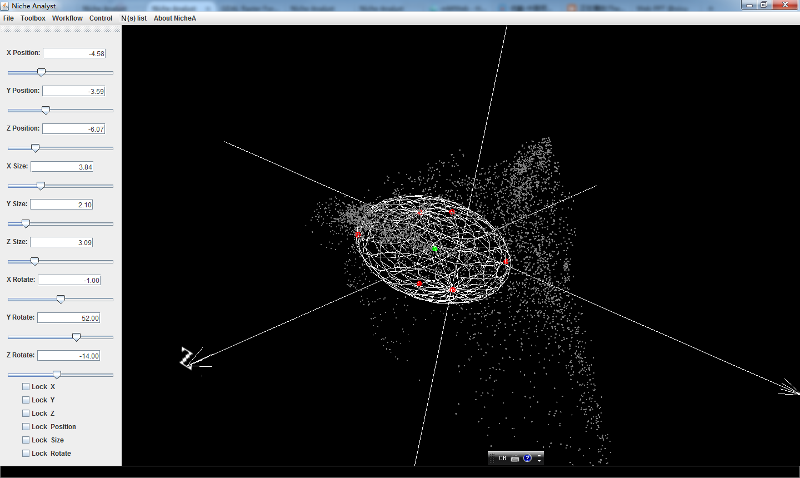
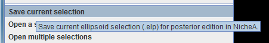
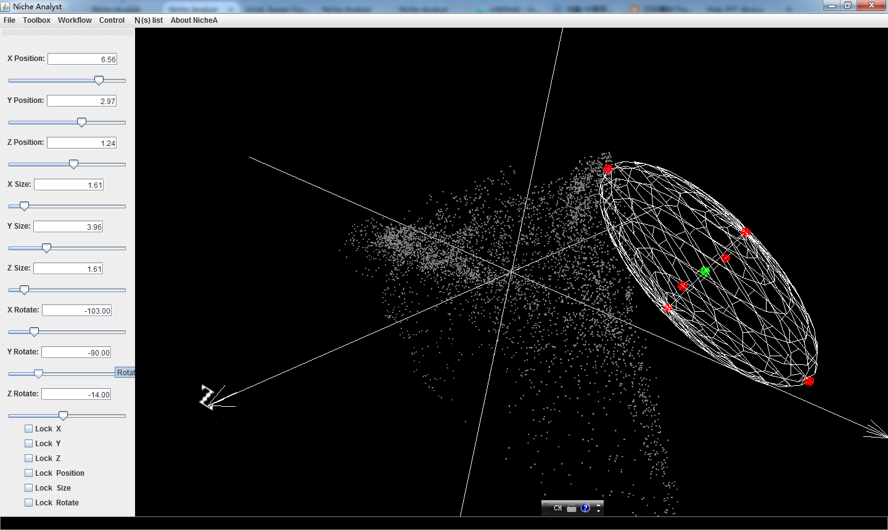

Save the configuration of a selection, and open it.
The definition of a selection is here. Fig.1 shows a typical selection in E space. You can use the "Save current selection" menu (Fig.2) to save the configuration to a file ended with ".elp". After that, you might move the selection to another location in E space (Fig.3). If you want to move the selection back to the previous location, you can use the "Open a selection" menu, and pick the save configuration file. The selection will move back to Fig.1.
Figure 1. A typical selection

Figure 2. The menu to save the configuration of selection

Figure 3. Moving the selection to another location
Figure 4. The menu to open the saved the configuration of selection
